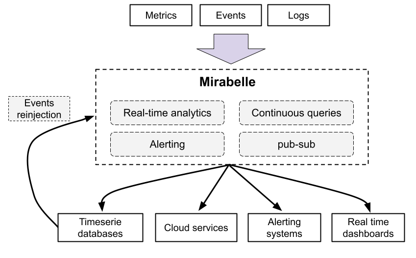
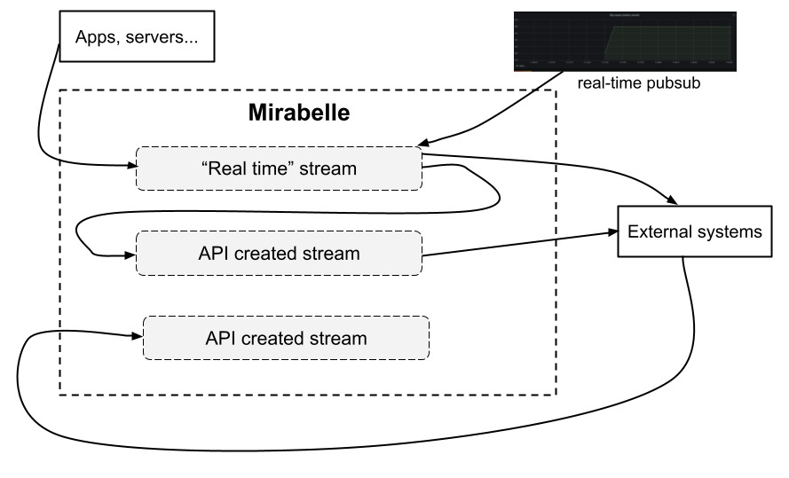

Mirabelle is a stream processing engine which can be used to aggregate events of any kinds (logs, metrics, traces…).
Its powerful and extensible DSL allows you to define computations on events streams. Mirabelle offers natively a lot of functions (time windows, mathematical operations, transforming data, relabeling, etc.) which can be easily combined according to your needs. +

Mirabelle can also route events to external systems (timeseries databases, logging systems, cloud monitoring services, etc.), fire alerts (e.g. to Pagerduty), write data into files and more.
It also implements a publish-subscribe system, which allows you to see in real time (through Websockets) events flowing into streams.
Mirabelle isinspired by Riemann. I would like to thank all Riemann maintainers and contributors.
Mirabelle supports the same protocol than Riemann. It means all Riemann tooling and integrations should work seamlessly with Mirabelle (which also contains a lot of new features).
Mirabelle also provides an HTTP API and natively supports receiving metrics in Prometheus remote write format. See the API documentation for more information about Prometheus integration.
It also supports Opentelemetry traces as input.
In Mirabelle, all streams advance based on the time of the events they receive. Because of that, it’s easy to reason about your streams, and to unit test them (the same inputs always produce the same outputs).
In Mirabelle, events arrive by default in streams defined in the Mirabelle configuration file. As said previously, the Mirabelle clock for a stream will only advance if you send new events.
You can also in Mirabelle instantiate steams on the fly (using the Mirabelle HTTP API) and push events into these new streams. All streams have their own clocks and can advance independently. You can choose on which stream clients should push events, and define which streams should be used by default.

You can have real time streams receiving events directly from your servers and applications, and some streams working on old (and probabled time ordered) data coming from external sutems. Like that, you can have the best of both words: real time analytics, and run analytics on old data using continuous queries for example.
Being able to use the same tool for stream processing and to work on historical data is interesting. You could for example have a Mirabelle instance used for real time stream processing, and another one (or even the same one on dedicated streams) working on old data… It’s up to you to decide !
Let’s say a web application is pushing the duration (in seconds) of the HTTP requests it receives. This metric could be modeled using this Mirabelle event (time is a nanosecond timestamp):
{:name "http_request_duration_seconds"
:time 1619731016145000000
:tags ["web"]
:metric 0.5
:attributes {:application "my-api"
:environment "production"}}
You could write a Mirabelle stream which will compute on the fly the quantiles for this metric. In this example, Mirabelle will split the received events into 60 seconds windows, then compute the percentiles, set the event :state to “critical” and send an alert to Pagerduty if the 0.99 quantiles is greater than 1 second.
(streams
(stream {:name :percentiles :default true}
(where [:= :name "http_request_duration_seconds"]
(percentiles {:duration 60
:percentiles [0.5 0.75 0.99 1]}
(where [:and [:= [:attributes :quantile] "0.99"]
[:> :metric 1]]
(with :state "critical"
(tap :alert)
(output! :pagerduty)))))))
The tap action is an action which will be only enabled in test mode, and which will save in a tap named :alert events passing by it. Indeed, everything can be unit tested easily in Mirabelle.
A test for this stream would be (remember that the time is in nanoseconds):
{:percentiles {:input [{:name "http_request_duration_seconds"
:metric 0.1
:time 1e9}
{:name "http_request_duration_seconds"
:metric 1.2
:time 30e9}
{:name "http_request_duration_seconds"
:metric 10
:time 40e9}
{:name "http_request_duration_seconds"
:metric 8
:time 50e9}
{:name "http_request_duration_seconds"
:metric 3
:time 70e9}]
:taps {:alert [{:name "http_request_duration_seconds"
:metric 10
:time 70e9
:state "critical"
:attributes {:quantile "0.99"}}]}}}
In this test, we inject into the :percentiles stream some events, and we verify that the tap named :alert contains the expected alert (the 0.99 quantile is greater than 1) generated for these events.
Thanks to Clojure datastructures, there is no side effects between streams and actions. It’s OK to modify events in parallel (in multiple threads) and to have multiple branches per stream. You can even pass events between streams (like described here). You are free to organize streams and how they communicate between each other exactly how you want to; the tool and its DSL will not limit you.
Here is a more complete and commented example, with multiple actions performed in one stream:
(streams
(stream {:name :multiple-branches}
(where [:= :name "http_request_duration_seconds"]
(with :ttl 60
;; push everything into influxdb
(output! :influxdb)
;; by will generate a branch for each :host value. Like that, downstream
;; computations will be per host and will not conflict between each other
(by {:fields [:host]}
;; if the metric is greater than 1 for more than 60 seconds
;; Pass events downstream
(above-dt {:duration 60 :threshold 1}
;; pass the state to critical
(with :state "critical"
;; one alert only every 60 sec to avoid flooding pagerduty
(throttle {:duration 60 :count 1}
(output! :pagerduty)))))))))
Raw events or computation results could also be forwarded to external systems (TSDB for example) for long-term storage.